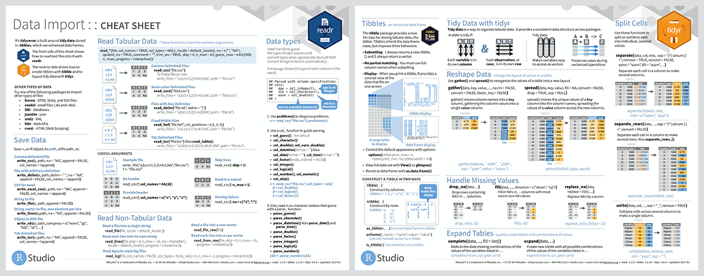
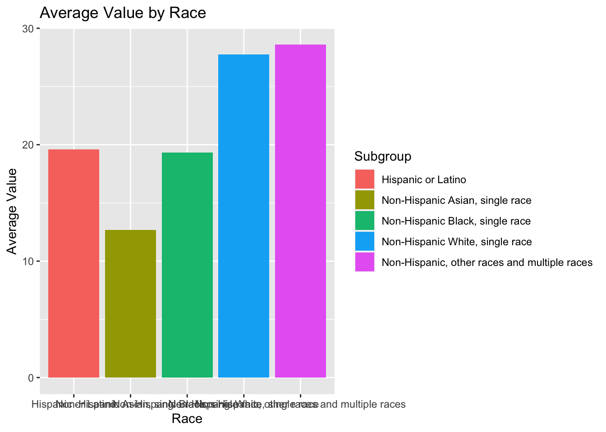
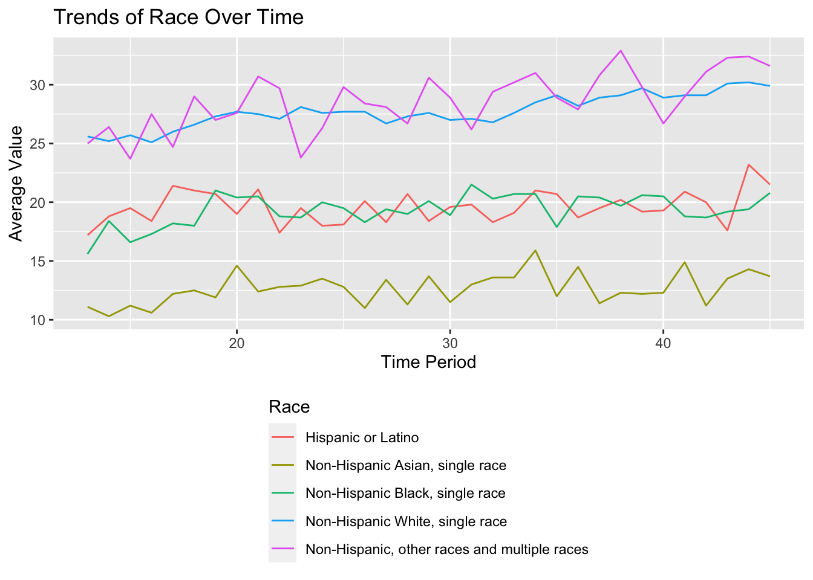
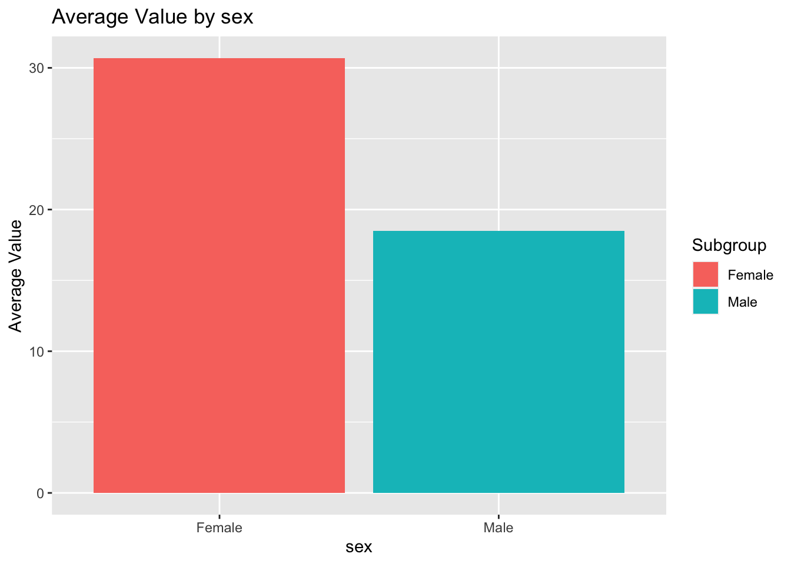
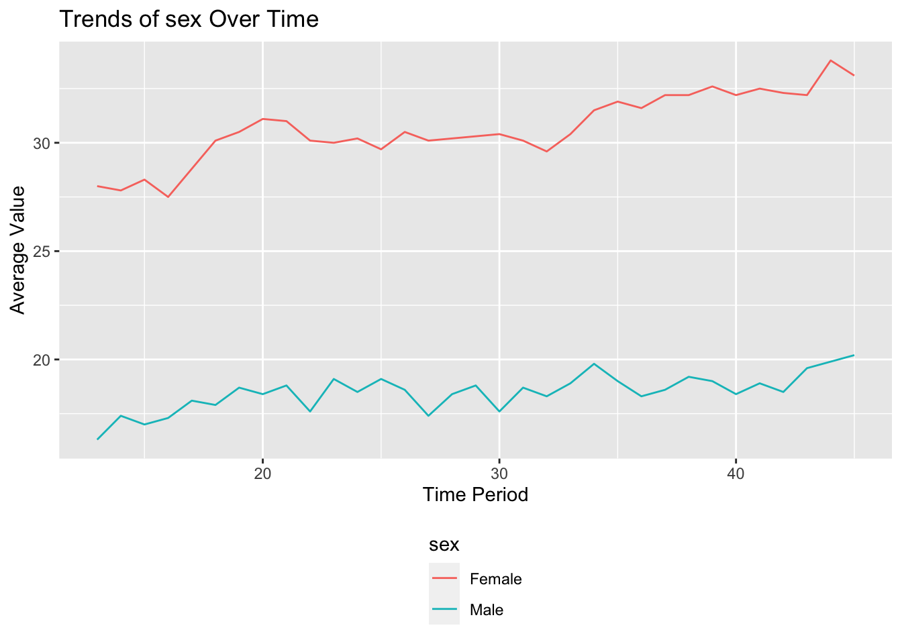
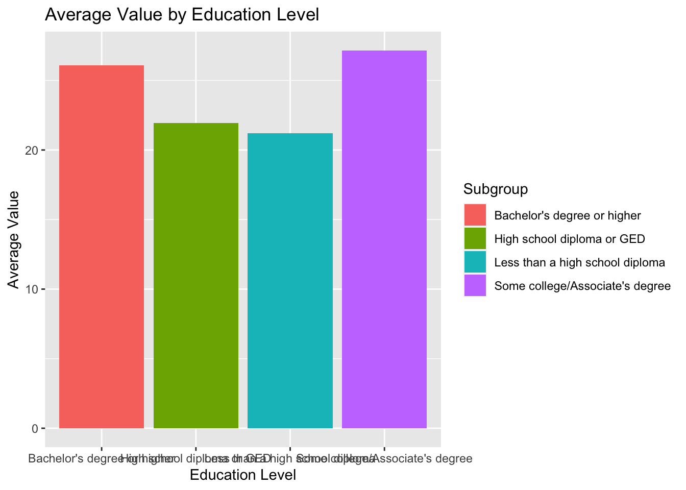
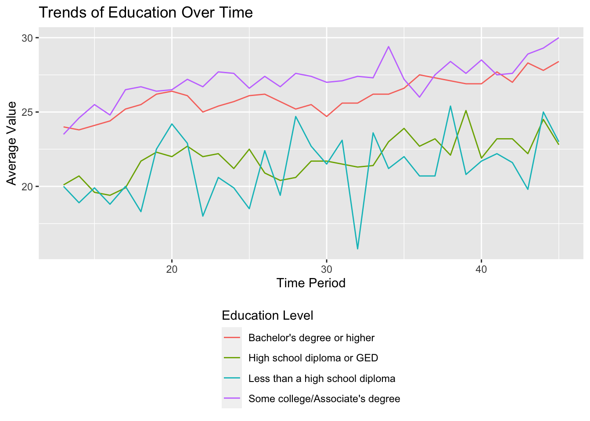
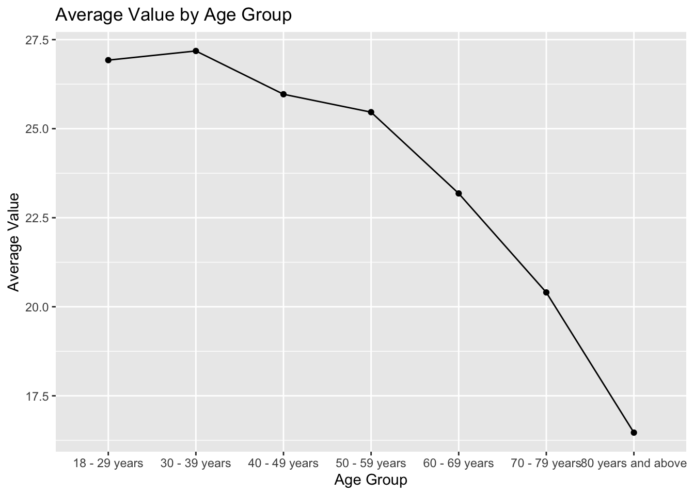
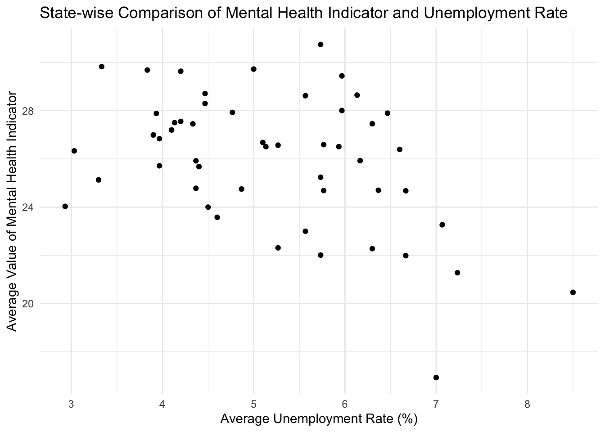
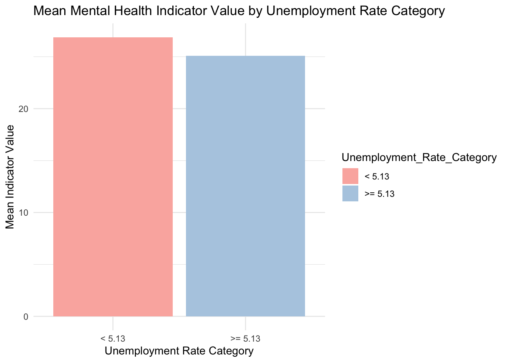

We describe the sources of our data and the cleaning process.

This comes from the file data.qmd.
Your first steps in this project will be to find data to work on.
I recommend trying to find data that interests you and that you are knowledgeable about. A bad example would be if you have no interest in video games but your data set is about video games. I also recommend finding data that is related to current events, social justice, and other areas that have an impact.
Initially, you will study one dataset but later you will need to combine that data with another dataset. For this reason, I recommend finding data that has some date and/or location components. These types of data are conducive to interesting visualizations and analysis and you can also combine this data with other data that also has a date or location variable. Data from the census, weather data, economic data, are all relatively easy to combine with other data with time/location components.
What makes a good data set?
Data you are interested in and care about.
Data where there are a lot of potential questions that you can explore.
A data set that isn’t completely cleaned already.
Multiple sources for data that you can combine.
Some type of time and/or location component.
Where to keep data?
Below 50mb: In dataset folder
Above 50mb: In dataset_ignore folder. This folder will be ignored by git so you’ll have to manually sync these files across your team.
Sharing your data
For small datasets (<50mb), you can use the dataset folder that is tracked by github. Add the files just like you would any other file.
If you create a folder named data this will cause problems.
For larger datasets, you’ll need to create a new folder in the project root directory named dataset-ignore. This will be ignored by git (based off the .gitignore file in the project root directory) which will help you avoid issues with Github’s size limits. Your team will have to manually make sure the data files in dataset-ignore are synced across team members.
Your load_and_clean_data.R file is how you will load and clean your data. Here is a an example of a very simple one.
source("scripts/load_and_clean_data.R",echo =TRUE# Use echo=FALSE or omit it to avoid code output )
> library(tidyverse)
── Attaching core tidyverse packages ──────────────────────── tidyverse 2.0.0 ──
✔ dplyr 1.1.4 ✔ readr 2.1.4
✔ forcats 1.0.0 ✔ stringr 1.5.0
✔ ggplot2 3.4.4 ✔ tibble 3.2.1
✔ lubridate 1.9.3 ✔ tidyr 1.3.0
✔ purrr 1.0.2
── Conflicts ────────────────────────────────────────── tidyverse_conflicts() ──
✖ dplyr::filter() masks stats::filter()
✖ dplyr::lag() masks stats::lag()
ℹ Use the conflicted package (<http://conflicted.r-lib.org/>) to force all conflicts to become errors
Rows: 20 Columns: 5
── Column specification ────────────────────────────────────────────────────────
Delimiter: ","
chr (1): bank
dbl (4): min, white, himin, hiwhite
ℹ Use `spec()` to retrieve the full column specification for this data.
ℹ Specify the column types or set `show_col_types = FALSE` to quiet this message.
You should never use absolute paths (eg. /Users/danielsussman/path/to/project/ or C:\MA415\\Final_Project\).
You might consider using the here function from the here package to avoid path problems.
Load and clean data script
The idea behind this file is that someone coming to your website could largely replicate your analyses after running this script on the original data sets to clean them. This file might create a derivative data set that you then use for your subsequent analysis. Note that you don’t need to run this script from every post/page. Instead, you can load in the results of this script, which could be plain text files or .RData files. In your data page you’ll describe how these results were created. If you have a very large data set, you might save smaller data sets that you can use for exploration purposes. To link to this file, you can use [cleaning script](/scripts/load_and_clean_data.R) wich appears as cleaning script.
Rubric: On this page
You will
Describe where/how to find data.
You must include a link to the original data source(s). Make sure to provide attribution to those who collected the data.
Why was the data collected/curated? Who put it together? (This is important, if you don’t know why it was collected then that might not be a good dataset to look at.
Describe the different data files used and what each variable means.
If you have many variables then only describe the most relevant ones and summarize the rest.
Describe any cleaning you had to do for your data.
You must include a link to your load_and_clean_data.R file.
Rrename variables and recode factors to make data more clear.
Also, describe any additional R packages you used outside of those covered in class.
Describe and show code for how you combined multiple data files and any cleaning that was necessary for that.
Some repetition of what you do in your load_and_clean_data.R file is fine and encouraged if it helps explain what you did.
Organization, clarity, cleanliness of the page
Make sure to remove excessive warnings, use clean easy-to-read code (without side scrolling), organize with sections, use bullets and other organization tools, etc.
This page should be self-contained.
————————-keep_below——————————————–
Describe where/how to find data:
Mental Health:
The dataset “Mental Health Care in the Last 4 Weeks” is available on Data.gov and provides valuable insights into the impact of COVID-19 on mental health. This initiative is part of a collaboration between the National Center for Health Statistics (NCHS) and the Census Bureau, using an experimental data system known as the Household Pulse Survey. Here’s a comprehensive overview incorporating the details of the dataset’s development and its findings:
Background of the Data:
The “Mental Health Care in the Last 4 Weeks” dataset provides crucial insights into how COVID-19 has impacted American households socially and economically. Developed by the NCHS in collaboration with the Census Bureau, it initially formed part of the Household Pulse Survey which began on April 23, 2020. The survey aimed to quickly monitor recent changes in various aspects of daily life, including mental health due to the pandemic.
This dataset specifically tracks changes in mental health care by showing the percentage of adults aged 18 and over who, in the past four weeks, have taken prescription medication for mental health, received counseling or therapy from a mental health professional, or had an unmet need for mental health services because they did not receive the counseling or therapy they needed.
Collected By: The dataset is a joint effort between the National Center for Health Statistics (NCHS) and the Census Bureau. It was part of the experimental Household Pulse Survey designed to rapidly respond to the evolving national health landscape under the strain of the coronavirus pandemic. This collaborative approach enhances the dataset’s relevance and utility in understanding the pandemic’s impact.
Purpose and Context:
This dataset provides timely information on the use of mental health services during a critical period. It supports a variety of research objectives, such as comparing current mental health statistics with previous years’ benchmarks, understanding ongoing trends, and planning resource allocation for mental health services. Historical data from the National Health Interview Survey (NHIS) of 2019 offers a useful comparison, highlighting trends over a longer period and under different circumstances.
Data Equity:
Ensuring equity in data analysis is vital, especially to address the diverse impacts of COVID-19 on different demographic groups. The dataset includes detailed breakdowns by age, ethnicity, and other factors to help identify and address disparities in mental health care access and utilization during the pandemic.
This comprehensive approach in data gathering and analysis is aimed at providing insights that can help guide public health strategies and interventions to better manage the nation’s mental health in the wake of the pandemic.
Unemployment Rate：
The dataset “U.S. Unemployment Rate Over the Last Four Years” provides a detailed view of the unemployment trends and changes in the American labor market. It reflects the economic challenges and recoveries during this period, particularly influenced by events such as the COVID-19 pandemic.
Background of the Data:
This dataset is collected by the Bureau of Labor Statistics (BLS), which conducts monthly surveys to gauge the unemployment rate across different demographics and sectors. The unemployment rate is a key indicator of economic health, showing the percentage of the labor force that is jobless but actively seeking employment.
Recent Trends:
In 2020, the unemployment rate reached an unprecedented peak due to the COVID-19 pandemic, reflecting widespread job losses during the initial lockdowns.
Following 2020, the unemployment rate began to decrease as economic activities resumed and vaccination rates increased, leading to gradual recovery in various sectors.
By early 2024, the unemployment rate had stabilized, showing signs of a resilient economy adapting to post-pandemic conditions.
Navigate to the “Data Tools” section and select “Top Picks” to quickly access the most frequently sought data, including unemployment rates.
You can also use the “Databases and Tools” section to access more customized data searches, including historical unemployment rates.
Source and Attribution:
Collected By: The data is collected by the U.S. Bureau of Labor Statistics (BLS), part of the U.S. Department of Labor, which is the principal Federal agency responsible for measuring labor market activity, working conditions, and price changes in the economy.
Purpose and Context:
The primary purpose of collecting unemployment data is to provide a clear picture of the labor market’s health and help policymakers, researchers, and the public understand current economic conditions. This data is crucial for making informed decisions regarding employment policies, economic assistance programs, and job training initiatives.
Data Equity:
The BLS ensures that the data is representative of the entire population by including diverse groups in its surveys, spanning different industries, age groups, races, and genders. This comprehensive approach allows for targeted interventions that address unemployment disparities among different demographic groups.
By analyzing this data, stakeholders can better understand the dynamics of the labor market and develop strategies to promote economic stability and growth.
Datasets
Cleaning:
you can access our Load and Clean Script here for the mental health data, we essentially got rid of the last 3 columns, and we got rid of any non-value cells. The columns we got rid of were ‘Confidence Interval’, ‘Quartile Range’ and ‘Suppression Flag’. We got rid of ‘Confidence Interval’ because you can calculate that using the previous two columns: LowCI and HighCI. We got rid of ‘Quartile Range’ because there were empty cells, i.e., not available for all of our data points. For the unemployment rate data, we keep only the rate for 2020,2021, and 2022, which is our mental health data cover, and calculate the average of them, then connect it with the average of values for different states, under indicator: Took Prescription Medication for Mental Health And/Or Received Counseling or Therapy, Last 4 Weeks.
Extra R package:
we are using the R package “gridExtra” to help us arrange the graph in the data page. “knitr” to help generate table
Mental Health:
Variable
Description
indicator
The indicator of the treatment the subject received. There were four: 1. Took prescription medication for mental health. 2. Received counseling or therapy. 3. Took prescription medication and/or received counseling or therapy. 4. Needed counseling or therapy but did not get it
Group:
the grouping method
State:
name of state, United State if all state are include
Subgroup
Each data point was also subgrouped by other demographic factors such as age, sex, race, education, state
value
people who received treatment or not, indicate mental health, higher is worse
for subgroups:
subgroup
Description
sex
Male or Female
age
The age ranged from 18-79 years old and were group in 10’s
race
There were five race categories. 1. Hispanic or Latino. 2. Non-Hispanic White. 3. Non-Hispanic Black. 4. Non-Hispanic Asian. 5. Non-Hispanic Other or Multiple races
education
There were four race categories. 1. Less than a high-school diploma. 2. High school diploma or GED. 3. Some college/Associate’s degree. 4. Bachelor degree’s or higher
The x-value “Time Period” is a measure of 2-week phases, therefore 20 is 40 weeks from when they first started collecting data. The time period spans across an overall 90 week period. Thus, the first data obtain is on Aug 31, 2020, time period 30is May 24, 2021, and the time data is on May 9, 2022. We can see for all indicator, the average value of the mental problem is increase along the time.
detailed data summary
For all the following analyze, we are focus on the indicator “Took Prescription Medication for Mental Health And/Or Received Counseling or Therapy, Last 4 Weeks”
general summary
Adding missing grouping variables: `Subgroup`
Variable
Min
Max
Mean
Hispanic or Latino along time
17.20000
23.20000
19.58182
Non-Hispanic Asian, single race along time
10.30000
15.90000
12.66970
Non-Hispanic Black, single race along time
15.60000
21.50000
19.34545
Non-Hispanic White, single race along time
25.10000
30.20000
27.75152
Non-Hispanic, other races and multiple races along time
23.70000
32.90000
28.60909
Female along time
27.50000
33.80000
30.69091
Male along time
16.30000
20.20000
18.49394
Bachelor’s degree or higher along time
23.80000
28.40000
26.06970
High school diploma or GED along time
19.40000
25.10000
21.92727
Less than a high school diploma along time
15.80000
25.40000
21.20606
Some college/Associate’s degree along time
23.50000
30.00000
27.15455
age
16.46667
27.18182
23.65541
state
16.93030
30.74242
25.95799
race


There is a difference in the average mental health scores between the races. From this graph, one case see that the race with the lowest mental health scores (engagement with mental health interventions), is Asian. It is then followed by Black, then Hispanic or Latino. And the races with the highest mental health scores are White and other race or multiple races. If you look at these values across time the order of these races in terms of mental health scores stay the same, but there are large variations among the Asian participants and the other races or multiple races. These two groups, as well as White participants, seem to have an increase in their mental health scores across time.
sex


There is a difference in the average mental health values between males and females. Across, time this difference remains equally prominent with females overall having higher mental health scores than males. This suggests that more females than males used mental health services. However, much like the other variables, there was a slight increase across time
education level


It appears that there is some variation in use of mental health interventions across education levels. It appears people with greater education levels seem to have poorer mental health, however this could be correlated with age or other more significant factors. Interestingly, there seems to be great variation in the correlation between education levels and mental health across the 90-week period, as indicated by the second graph. But, in general, the percentage of people who require mental health intervention increases over time.
age

As one can see, there is a clear negative correlation between the percentage of people who required mental health intervention and age group, indicating as age increased the need for mental health resources (and the impact of mental health) decreased. One could say perhaps the younger population was more impacted by the social isolation that the COVID-19 posed.
The unemployment rate by time vs the value shows a clear trend that when the unemployment rate is high, the mental health of whole country seems to be better.
By state, average of all time:


The unemployment rate by state vs the value also shows a trend that the lower unemployment rate in fact increase the mental health problem. The bar chart is divided by the median of the unemployment rate(5.5%), it also shows that the higher unemployment rate usually indicate a better mental health